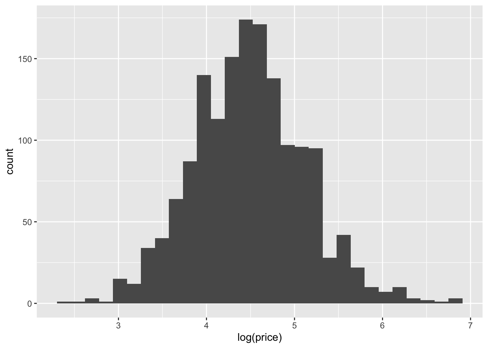

Today, we’ll be analyzing Airbnb Data. This data contains information on 1561 listings across 43 Chicago neighborhoods, and hence multiple listings per neighborhood:
We will utilize a Bayesian hierarchical (multilevel) model to understand the effect that price, walking score, number of rooms, and listing type have on price. We will account for the grouping variable neighborhood by allowing each neighborhood to have its own baseline price level. This approach will help us capture not only the effects of listing-specific attributes, like the number of rooms and type of listing, but also the unique characteristics of each neighborhood that might influence price. By using a Bayesian hierarchical model, we’ll incorporate both fixed effects, which apply consistently across all listings, and random effects for neighborhoods, which allow for neighborhood-specific price variations. This will enable us to understand both the overall trends in listing prices and how these trends vary across different neighborhoods in Chicago.
Definitions for today
log scale
fixed vs random effects
Load Libraries
library(tidyverse)
── Attaching core tidyverse packages ──────────────────────── tidyverse 2.0.0 ──
✔ dplyr 1.1.4 ✔ readr 2.1.5
✔ forcats 1.0.0 ✔ stringr 1.5.1
✔ ggplot2 3.5.1 ✔ tibble 3.2.1
✔ lubridate 1.9.3 ✔ tidyr 1.3.1
✔ purrr 1.0.2
── Conflicts ────────────────────────────────────────── tidyverse_conflicts() ──
✖ dplyr::filter() masks stats::filter()
✖ dplyr::lag() masks stats::lag()
ℹ Use the conflicted package (<http://conflicted.r-lib.org/>) to force all conflicts to become errors
library(bayesrules)library(bayesplot)
This is bayesplot version 1.11.1
- Online documentation and vignettes at mc-stan.org/bayesplot
- bayesplot theme set to bayesplot::theme_default()
* Does _not_ affect other ggplot2 plots
* See ?bayesplot_theme_set for details on theme setting
library(rstanarm)
Loading required package: Rcpp
This is rstanarm version 2.32.1
- See https://mc-stan.org/rstanarm/articles/priors for changes to default priors!
- Default priors may change, so it's safest to specify priors, even if equivalent to the defaults.
- For execution on a local, multicore CPU with excess RAM we recommend calling
options(mc.cores = parallel::detectCores())
library(janitor)
Attaching package: 'janitor'
The following objects are masked from 'package:stats':
chisq.test, fisher.test
library(tidybayes)library(broom.mixed)
Data
data(airbnb)
?bayesrules::airbnb
Exploratory Data Analysis (~15 minutes)
Price vs Log Price
ggplot(airbnb, aes(x = price)) +geom_histogram()
`stat_bin()` using `bins = 30`. Pick better value with `binwidth`.
`stat_bin()` using `bins = 30`. Pick better value with `binwidth`.

In R, the log() function calculates the natural logarithm of a number, which uses Euler’s number (e ≈ 2.71828) as the base.
So, log(price) gives you the exponent to which you need to raise e to get the original price.
Converting Logarithmic Values Back to Prices:
So, a log(price) of 5 corresponds to an actual price of approximately $148.41.
2.71828 ^ 5
Why?
Airbnb prices are often highly skewed, with a few extremely high-priced listings causing a right-skewed distribution. Skewed data can make it challenging to model and interpret because traditional regression models (like those that assume a normal distribution) struggle with skewed outcomes. Taking the logarithm of prices transforms the data into a more symmetric, bell-shaped distribution, which is easier to work with statistically and allows for better-fitting models.
In this context, fixed effects represent the estimated impact of specific predictors (like walk_score, bedrooms, rating, and room_type) on the outcome variable, log(price), that are assumed to apply consistently across all listings and do not vary by neighborhood.
walk score
bedrooms
rating
room type
random effects
In this context, random effects account for group-specific variations in the outcome variable, log(price), that are unique to each neighborhood. They allow each neighborhood to have its own baseline price level, capturing unobserved characteristics that may influence prices within each neighborhood beyond the fixed effects.
Mean of 0: Centering the prior at 0 reflects a neutral assumption that, without data, we expect each predictor’s effect on log(price) to be around zero. This means that, initially, we don’t assume a strong positive or negative impact for any predictor.
Standard Deviation of 2.5: The standard deviation defines how wide the prior is around zero, allowing for a range of possible values. Here, 2.5 is quite broad, meaning we are open to the coefficients being either positive or negative and potentially substantial, but we don’t commit to any specific range with high certainty.
prior covariance
prior_covariance = decov(reg = 1, conc = 1, shape = 1, scale = 1) provides a weakly informative prior for the neighborhood random effect variances. It applies regularization to prevent overfitting and stabilizes the model, especially useful in situations with sparse data for some neighborhoods. This prior encourages realistic neighborhood-level variability without constraining it too tightly, allowing the data to play a significant role in determining neighborhood-specific intercepts.
airbnb_model
stan_glmer
family: gaussian [identity]
formula: log(price) ~ walk_score + bedrooms + rating + room_type + (1 |
neighborhood)
observations: 1561
------
Median MAD_SD
(Intercept) 1.9 0.3
walk_score 0.0 0.0
bedrooms 0.3 0.0
rating 0.2 0.0
room_typePrivate room -0.5 0.0
room_typeShared room -1.1 0.1
Auxiliary parameter(s):
Median MAD_SD
sigma 0.4 0.0
Error terms:
Groups Name Std.Dev.
neighborhood (Intercept) 0.20
Residual 0.37
Num. levels: neighborhood 43
------
* For help interpreting the printed output see ?print.stanreg
* For info on the priors used see ?prior_summary.stanreg
Model Outputs
Bedrooms (0.3):
For each additional bedroom, log(price) increases by 0.3.
In percentage terms, this translates to an approximate 35% increase in price per additional bedroom (2.71828 ^ 0.3 = 1.349859). So, if a listing has one more bedroom, we expect its price to increase by around 35%.
Rating (0.2):
For each one-point increase in rating (e.g., from 4 to 5 stars), log(price) increases by 0.2.
This translates to an approximate 22% increase in price per one-point increase in rating (since 2.71828 ^ 0.2 ≈1.22). Listings with higher ratings are expected to have higher prices.
Room Type - Private Room (-0.5):
If a listing is a private room (rather than an entire home/apartment), log(price) decreases by 0.5.
In percentage terms, this means a 39% decrease in price for private rooms compared to entire homes (2.71828 ^ 0.5 ≈0.61). Private rooms are generally priced lower than entire apartments.
Walk Score (0.0):
The coefficient for walk_score is 0.0, indicating no meaningful impact on log(price). This suggests that walkability, in this dataset, doesn’t significantly influence price once other factors are accounted for
Walk score accounted for in neighborhood
Note: Including walking score in the model decreases the standard deviation/increases certainty
Neighborhood (Intercept, Std.Dev. = 0.20):
This random intercept captures the neighborhood-level variability in baseline price. A standard deviation of 0.20 implies that different neighborhoods have moderately different baseline price levels, even after adjusting for the listing’s specific attributes.
This allows the model to adjust price expectations based on each neighborhood’s unique characteristics that aren’t explained by bedrooms, rating, etc.
Residual (Std.Dev. = 0.37):
This residual variance (0.37) indicates that there is still some remaining, unexplained variability in listing prices. This captures the random noise or price differences that are not accounted for by the fixed and random effects.
Summary
In plain terms, this model suggests:
Each additional bedroom increases price by about 35%.
Each additional rating point increases price by around 22%.
Private rooms cost about 39% less than entire homes.
Shared rooms cost about 67% less than entire homes.
Neighborhood effects indicate some variability, with each neighborhood having a slightly different baseline price level.